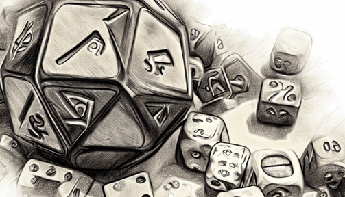
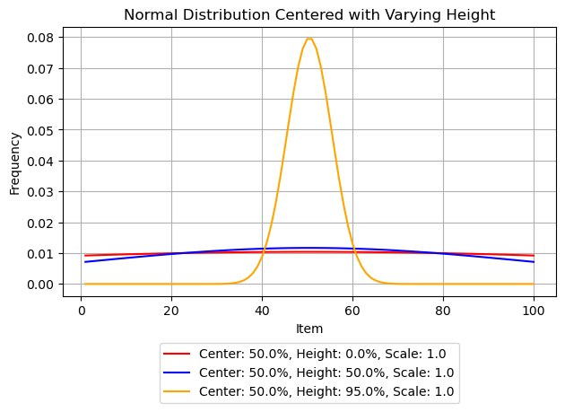
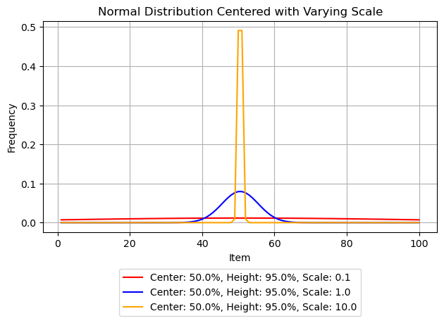
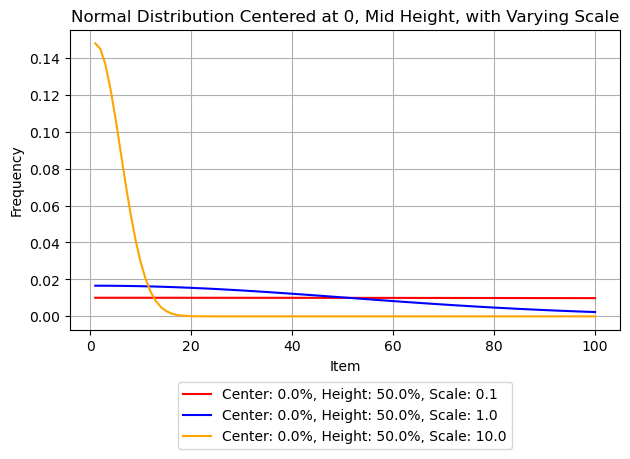
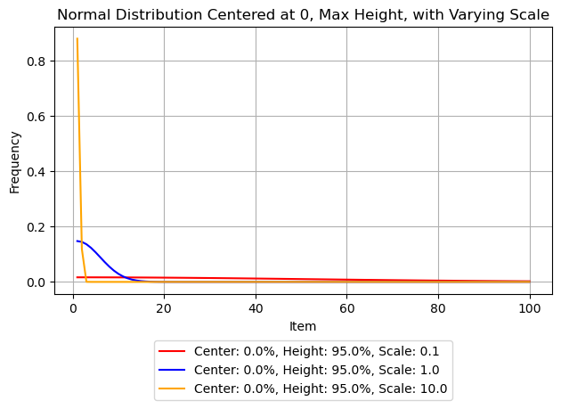

Weight Randoms

Background and Summary
Building a Solution Using AI Tools
The purpose of this site and my own experiments is to give myself and any others who honor me by reading this a conceptual basis for using AI in software development. My first experimental scenario is for a random number algorithm I will be using in a game I am developing.
I chose this scenario because it is conceptually simple, and it uses concepts from basic statistics. The algorithm and the tests can be implemented in any language using the prompts in the github repo. The prompts themselves are a useful baseline for comparing different AI agents. I think it’s too early to call them benchmarks but I can’t be the only one doing this. So, perhaps the thinking will feed into something more formal.
About this Article
This article is to introduce the project and its elements. I am resisting the temptation to start commenting on the details of the process or my conclusions because this is a chapter, not the book. This is the first of several articles about the Weighted Randoms project. I hope you enjoy the series.
Project Elements
I made everything in this project with AI assistance. The assistants were:
- Bing AI
- ChatGPT (3.5 and 4)
- Github Copilot in Visual Studio Code and Visual Studio 2022
It demonstrates:
- Conceptual prototyping
- Generating user stories using AI
- Generating unit tests
- Improving the code quality with comments, exception handling, input validation and logging
- Visualizing output using Jupyter notebooks and Python
- Refactoring the results into a larger solution
My current plan is to write individual articles on each of these topics.
Weighted Random Selection for Games
The WeightedRandomSelection class provides a powerful method for selecting an item from a list based on a weighted random selection algorithm. It utilizes a normal distribution to assign weights to each item, which can be customized by adjusting the peak position, center height, and standard deviation scaling factor of the curve.
This algorithm is particularly useful in the context of game engines, where it can be used to select opponents, power-ups, or other game elements based on their difficulty or rarity. The user can adjust the parameters to create a more challenging or exciting gameplay experience, while the input validation ensures that the algorithm functions correctly.
In addition, the algorithm includes an efficient weight calculation method to handle lists of any type, as well as a random number generator for item selection. The user can also adjust the parameters to create a "sliding" list, skewing the curve to select items based on their position within the list.
Understanding the Algorithm
Visual Examples
The following picture illustrates the basic capability of the algorithm. I made it by plotting test results in a Jupyter notebook with Python and I wrote the code with the assistance of ChatGPT.
One way to use the algorithm is to change the peak of the curve. The first series (red) shows a curve where all items have similar weights and are equally likely. The last series (yellow) shows a curve where items in the center are much more likely to be selected.

Another way to use the algorithm is to change the standard deviation by applying a scale factor. The first series (red) shows a curve where the scale is very small, 0.1. This has the effect of flattening the curve even when the height is set to the maximum. The last series (yellow) shows a curve where items in the center are the only items with any chance of being selected.

A third way to use the algorithm is to change the center of the curve. In this example, items at the beginning of the list are most likely to be selected.

Finally, you can combine these options to tune the effects. This example shows how you might make a list where only the first couple items are ever selected, and you could slide the selection window by changing the center based on circumstances such as a player’s level.

Project Inventory
Prompts and user stories
Main Solution
Unit Tests
CSV Export for Visualization
Jupyter Notebook
Additional Notes
You can use either Visual Studio Code or Visual Studio depending on your preferences
You will also need Python and the associated packages if you want to work with the notebook interactively. You can get started here
The easiest way to follow changes to this project is via the ‘Watch’ feature in github